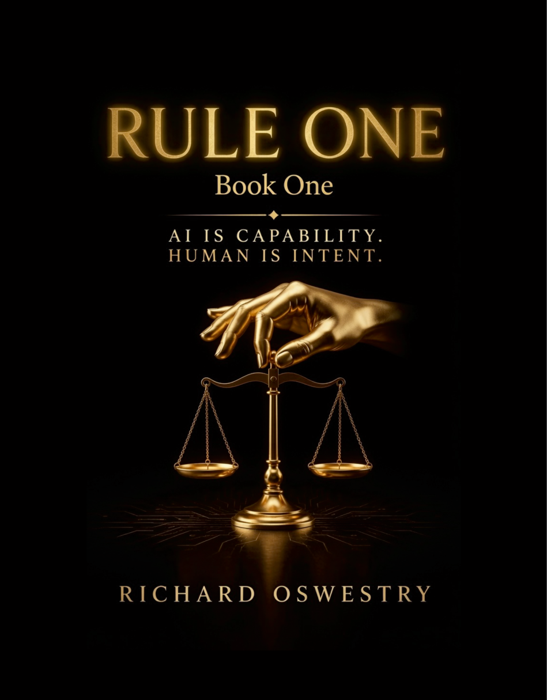

BOOKS
Stories of consequence, choice, memory and human intent.

RULE ONE
BOOK ONE
AI is capability.
Human is intent.
Human is intent.
Artificial intelligence is capable of extraordinary things. But capability alone does not determine what happens next.
Rule One explores the relationship between technology, human intent and the consequences that follow when the two meet.